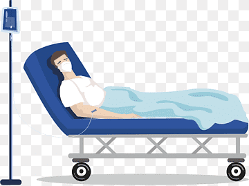
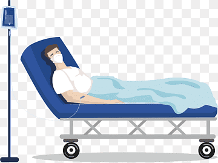

Designed by
Abimbola Fatoki 0856504
Olufunke Temenu
What is Zopiclone?
Zopiclone is a sedative-hypnotic medication that belongs to the class of drugs known as non-benzodiazepine hypnotics.[1]. It is primarily used to treat insomnia, a sleep disorder characterized by difficulty falling asleep, staying asleep, or waking up too early. Zopiclone works by enhancing the activity of gamma-aminobutyric acid (GABA), a neurotransmitter in the brain that promotes relaxation and sleep.
How Zopiclone Differs from Other Sleep Medications
Unlike benzodiazepines, which also act on GABA receptors, Zopiclone has a more selective action. This selectivity reduces the risk of certain side effects, such as daytime drowsiness and cognitive impairment, making it a preferred choice for short-term treatment of insomnia [6]. Zopiclone is metabolized in the liver and has a half-life of approximately 5 hours, which means it is effective for nighttime use without causing significant residual effects the next day [4].
Common Uses of Zopiclone
Zopiclone is typically prescribed for short-term use, usually no longer than 2-4 weeks, to avoid the risk of dependence and tolerance [1]. It is often recommended for individuals experiencing transient or short-term insomnia caused by stress, anxiety, or environmental factors [5]. In some cases, it may also be prescribed for patients recovering from surgery, as pain and hospital routines can disrupt normal sleep patterns [2].
Why Am I Taking Zopiclone?
If you have been prescribed Zopiclone, it is likely because you are experiencing difficulty sleeping. Insomnia can have a significant impact on your overall health and well-being, affecting your mood, cognitive function, and ability to perform daily tasks. Here are some common reasons why Zopiclone may be prescribed:
1. Post-Surgery Recovery: After surgery, many patients experience difficulty sleeping due to pain, discomfort, or the unfamiliar environment of a hospital. Zopiclone helps promote restful sleep, which is essential for the healing process [2].
2. Stress and Anxiety: High levels of stress or anxiety can interfere with your ability to fall asleep or stay asleep. Zopiclone can help calm your mind and induce sleep, allowing you to get the rest you need [5].
3. Environmental Factors: Changes in your environment, such as travel or shift work, can disrupt your sleep cycle. Zopiclone can help regulate your sleep patterns during these transitions [5].
Chronic Insomnia: While Zopiclone is generally prescribed for short-term use, it may also be used in some cases of chronic insomnia under close medical supervision [1].
How Does Zopiclone Work?
Zopiclone works by enhancing the effects of GABA, a neurotransmitter that inhibits brain activity. GABA is responsible for calming the nervous system, reducing anxiety, and promoting relaxation. By binding to GABA receptors in the brain, Zopiclone increases the inhibitory effects of GABA, leading to sedation and sleep [1].
Mechanism of Action
When you take Zopiclone, it quickly enters your bloodstream and reaches your brain, where it binds to specific GABA receptors. This binding enhances the flow of chloride ions into neurons, which hyperpolarizes the cell membrane and reduces neuronal excitability. As a result, your brain activity slows down, making it easier for you to fall asleep and stay asleep [1].
Selective Action on GABA Receptors
One of the key advantages of Zopiclone over benzodiazepines is its selective action on GABA receptors. This selectivity reduces the risk of side effects such as daytime drowsiness, memory impairment, and dependence, making it a safer option for short-term use [6].
Potential Risks
While Zopiclone is effective in treating insomnia, it is not without risks. Like all medications, it can cause side effects and may lead to dependence if used improperly. Here are some potential risks associated with Zopiclone:
- Dependence and Tolerance: Long-term use of Zopiclone can lead to tolerance, meaning you may need higher doses to achieve the same effect. This can increase the risk of dependence, where your body becomes reliant on the medication to sleep [7].
- Withdrawal Symptoms: If Zopiclone is stopped abruptly, you may experience withdrawal symptoms such as rebound insomnia, anxiety, irritability, and sweating. To avoid these symptoms, it is important to taper off the medication under medical supervision [8].
- Daytime Drowsiness: Zopiclone can cause drowsiness, which may persist into the next day. This can impair your ability to drive, operate machinery, or perform tasks that require alertness [2].
- Interactions with Alcohol and Other Medications: Zopiclone should not be taken with alcohol or other sedatives, as this can increase the risk of dangerous side effects such as respiratory depression and severe drowsiness [3].
- Cognitive Impairment: In some cases, Zopiclone can cause memory problems, confusion, and difficulty concentrating, especially in older adults [6].
- Risk of blood pressure fluctuating
Top 3 Safety Tips
- Take Only When Needed: Zopiclone should be used only when you are experiencing significant difficulty sleeping. Avoid using it every night to reduce the risk of dependence and tolerance [9].
- Avoid Driving or Operating Machinery: Zopiclone can cause drowsiness, which may impair your ability to drive or operate heavy machinery. Avoid these activities until you know how the medication affects you [2].
- Do Not Mix with Alcohol or Sedatives: Combining Zopiclone with alcohol or other sedatives can increase the risk of dangerous side effects. Always consult your doctor before taking any other medications while on Zopiclone [3].
Additionally, consult your doctor before stopping Zopiclone to avoid withdrawal symptoms. Always follow the prescribed dosage and duration to minimize risks [9].

References
- 1. National Institute for Health and Care Excellence. (2022). Zopiclone for insomnia. NICE. https://www.nice.org.uk
- 2. Drugs.com. (2023). Zopiclone: Uses, Dosage, and Side Effects. https://www.drugs.com/zopiclone.html
- 3. RxList. (2023). Zopiclone: Drug Information and Patient Guide. https://www.rxlist.com/zopiclone.html
- 4. British National Formulary. (2023). Zopiclone: Pharmacokinetics. https://www.bnf.org
- 5. Mayo Clinic. (2023). Insomnia: Causes and Treatment. https://www.mayoclinic.org
- 6. PubMed. (2023). Zopiclone vs Benzodiazepines: A Comparative Study. https://www.ncbi.nlm.nih.gov
- 7. World Health Organization. (2023). Zopiclone: Dependence and Tolerance. https://www.who.int
- 8. NHS. (2023). Zopiclone: Withdrawal Symptoms. https://www.nhs.uk
- 9. FDA. (2023). Zopiclone: Safety Guidelines. https://www.fda.gov